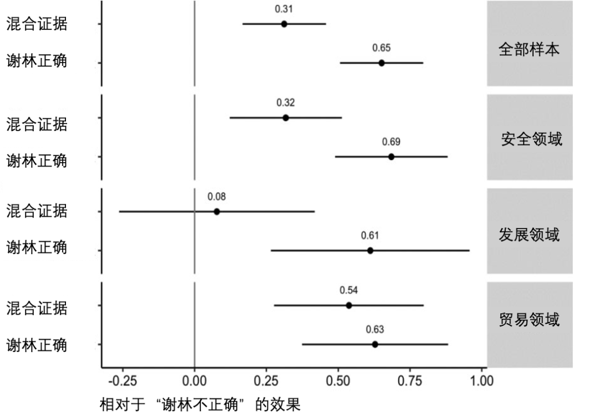
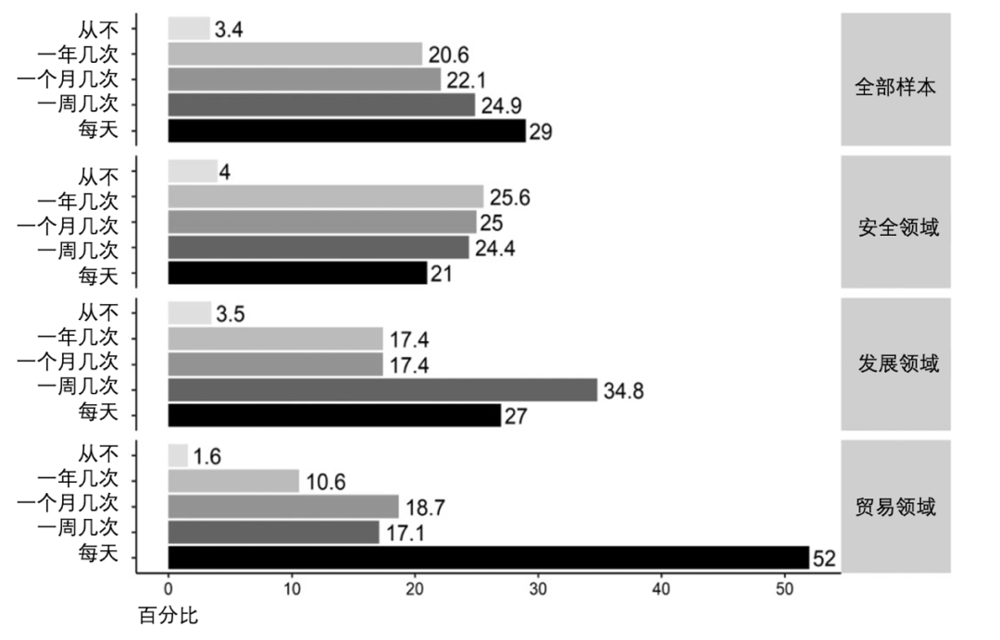
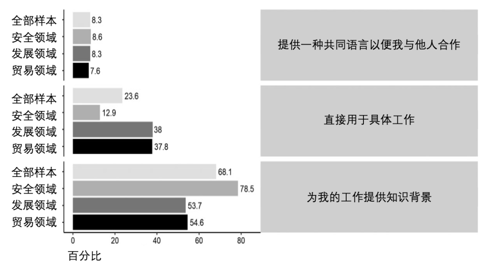
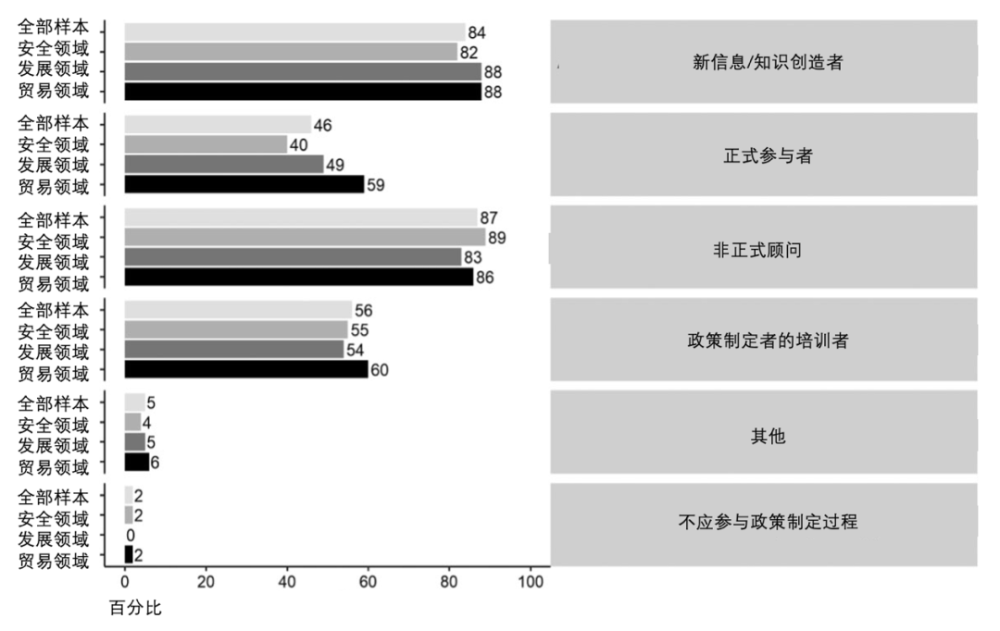
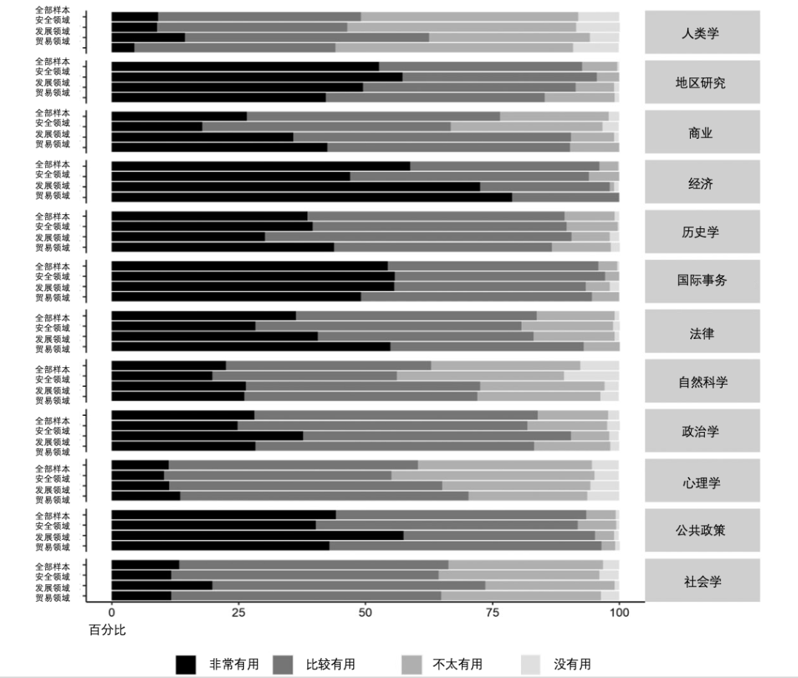
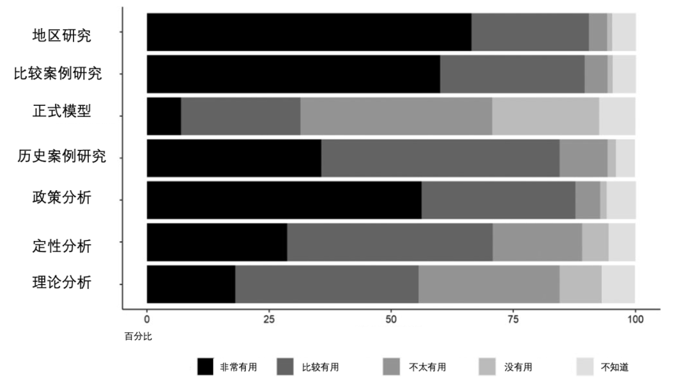
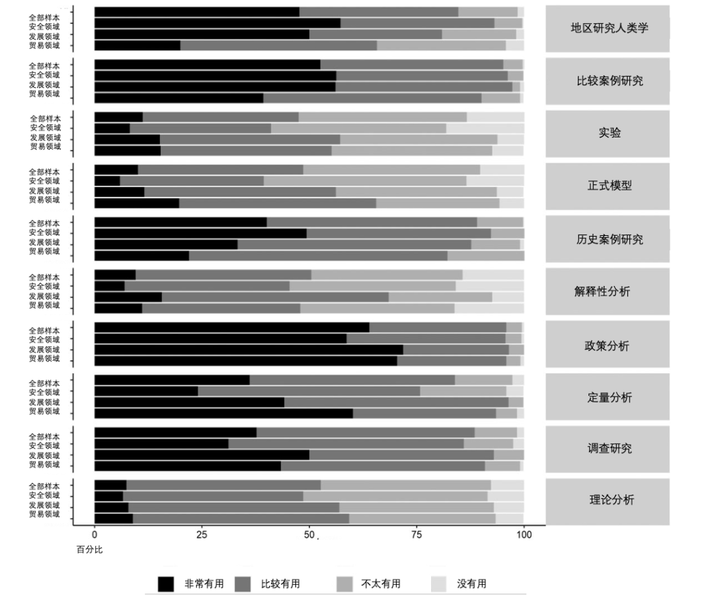
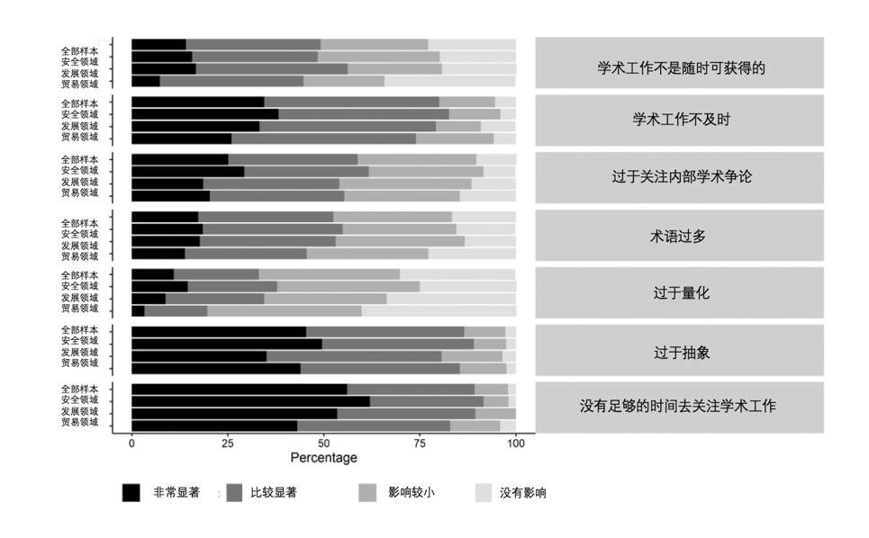

收录于合集

社会科学会影响外交政策吗？
作者： Paul C. Avey，弗吉尼亚理工大学政治学系副教授；Michael C. Desch，圣母大学国际关系教授和国际安全中心主任；Eric Parajon，北卡罗来纳大学教堂山分校政治学系研究生；Susan Peterson，温迪和埃默里·里夫斯政府和国际关系教授兼威廉玛丽学院政府系主任；Ryan Powers，佐治亚大学公共与国际事务学院国际事务系助理教授；Michael J. Tierney，乔治和玛丽希尔顿政府学教授兼威廉玛丽全球研究所所长。
编译： 何诗雨（国政学人编译员，武汉大学外交学专业）
来源： Avey P C, Desch M C, Parajon E, et al. Does Social Science Inform Foreign Policy? Evidence from a Survey of US National Security, Trade, and Development Officials[J]. International Studies Quarterly , 2022, 66(1): sqab057.
导读
社会科学会影响外交政策吗？一些政策官员、学者和专家经常感叹，政策制定者的需要和学者的产出之间存在鸿沟。然而，另一部分人指出，虽然学术与政策之间的差距仍比较明显，但是政治学（尤其是国际关系学科）近年来在与政策界沟通方面有重大进展，许多学者认为现在是学术参与的黄金时代。 关于如何评估政策制定者对学术研究的看法，一个直接有效的方法就是询问他们。本文报告了作者在2017年至2018年对美国外交政策制定者进行调查的结果。 调查内容包含行为和态度方面的问题，即受访者在为美国政府工作时是否、何时以及如何看待和使用学术研究；在调查方法上，该调查借鉴了2011年Paul Avey和Michael Desch对美国国家安全官员的调查研究，以便观察在国家安全领域，政策制定者如何看待和使用学术研究是否会随着时间的推移而发生变化。 但是，该调查在以下四个重要方面与前者不同 ：一是问题领域更广阔，该调查涵盖了贸易、发展和安全领域的政策制定者，从而能够让读者了解和比较政策界对不同问题领域的学者的要求；二是样本更多样，低级别的政策官员也被纳入调查范围；第三，该调查嵌入了一系列实验，以便为弥合学术与政策的差距提供可资借鉴的因果关系；第四，该调查扩大学术“参与”的范围，包括社交媒体上的参与、国际关系学者对未来政策制定者的教育培训等。
作者行文思路如下，首先介绍研究设计，然后展示调查结果：(1) 对两个实验进行分析，探讨官员是否愿意根据学术界的共识程度来更新其政策观点；（2）对调查问题和第三个实验进行分析，探讨官员在为美国政府工作时是否愿意运用学术论点和数据；（3）分析相关社会科学方法对其工作的有用性。在讨论调查结果的过程中，本文强调了安全、贸易和发展三个领域的显著差异。进而，本文探讨了安全官员与发展和贸易官员之间差异的可能来源。在结论部分，本文总结了调查结果，并提出了一些建议。
编译
01
研究设计
通过联邦黄皮书，作者确定了在克林顿、布什和奥巴马执政期间，负责制定或执行美国贸易、国家安全或政策发展的有关部门的工作人员，将助理/副主任（或同等职位）及以上的官员作为调查样本，并邮寄了一封由前美国政府官员（前国防部长罗伯特·盖茨、前世界银行行长和前美国贸易代表罗伯特·佐利克）签署的征求信。
作者收到了616个人的回复，安全领域、贸易领域和发展领域的官员的回复率分别为23.4%、14.5%和14.8%。虽然受访者包括三个领域的官员，但仍以国家安全官员为主——在安全和国防领域工作的受访者占57.3%，而贸易领域和发展领域的受访者仅占21.8%和20.9%。受访者的平均年龄为60岁，绝大多数是白人（90.4%，与2011年的调查大致相同）和男性（75%，2011年为85%），超过90%的人拥有高学历（2011年为85%）。受访者为美国政府工作的平均时间为21.2年，与2011年的调查数据相比略有下降。
除此之外，作者还询问了社会科学研究是否、何时以及如何影响了受访者的工作，以及他们在工作中使用了哪些学术信息或其他信息来源，以便确定官员是否以及在多大程度上听取和回应国际关系学者关于政策问题的意见、接受和运用社会科学研究中的论点和数据。
02
调查结果
调查结果显示，上述三个问题的答案都是肯定的。但是，安全官员运用社会科学研究的频率低于贸易和发展领域的官员，后者更有可能认为学术研究能够直接适用于他们的工作。
1.1 外交政策制定者会听取国际关系学者的意见吗？
**
**
为了研究安全、贸易和发展领域的官员是否以及在多大程度上对国际关系学者的论点做出反应，作者进行了两项调查实验，作为第一个因果关系的证据，即官员会根据国际关系学者的信息来更新自己的观点。
政策共识的影响
第一个实验评估官员是否会对学者和专家的意见做出回应，“如果你得知52/74/94%（分别代表“低共识”条件、“中度共识”条件和“高度共识”条件）的国际关系专家/学者认为某项政策有益于美国，这是否会改变你对该政策的支持/不支持程度，还是对你的态度没有影响？”在此过程中，作者避免使用“专家”或“学者”等标签，以免群体标签影响官员的反应水平。受访者的选项包括“这使我更有可能支持该政策”、“这不会影响我的观点”和“这使我更不可能支持该政策”。为了便于解释，作者对量表进行了二分，将“这使我更有可能支持该政策”的数值定为100，其他答案的数值为0。
图1 学者共识如何影响官员对政策的支持程度
图1显示在相对低共识的条件下，学者之间增强共识的效果。综合三个问题领域的调查结果，从低共识条件到中度共识条件，受访者“更有可能支持该政策”的概率增加近30%，从低共识条件到高度共识条件，受访者“更有可能支持该政策”的概率增加约50%。按照问题领域划分，安全官员的态度具有更大的弹性：从低共识到中度共识，安全官员支持政策的概率仅增加了21%，而发展和贸易官员支持政策的概率分别增加了30%和49%。 鉴于发展和贸易领域的子样本缺乏精准性，作者建议不要过多地关注各问题领域之间的差异。相反，作者认为，至少在这个假设的环境中，官员愿意对学者共识做出回应。
**
**
**学者在某个具体外交政策上达成共识的影响
**
为了更好地了解在某个具体外交政策方面，学者之间的共识如何官员的看法，作者进行了另一个实验，关注焦点是“是否使用武力来表明本国的可信度或决心”。首先，作者向受访者简要介绍了托马斯·谢林关于“可信度”的观点，即可信度是少数值得为之斗争的东西。接着，受访者被随机分配到以下条件中——“学者认为谢林的观点是正确的”、“学者认为谢林的观点是不正确的”、“学者发现了能够证实和反驳谢林观点的混合证据”。作者对受访者进行提问，“你是否同意可信度对于实现外交政策目标至关重要？”，受访者通过五分同意量表进行回答（五分同意量表从“非常同意”到“非常不同意”，中间点是“既不同意也不反对”）。
**
**

图2 学者共识如何影响官员对谢林的假说的看法
图2再次显示，国际关系学者的共识会对官员的观点产生广泛影响。从整体来看，实验条件从“谢林是不正确的”变为“混合证据”之后，受访者对谢林的假说的认同增加了0.31（即认同谢林的受访者比例增加了11%）；实验条件从“谢林不正确”变为“谢林正确”之后，受访者对谢林的假说的认同增加了0.65（即认同谢林的受访者比例增加了16%），而这种影响在安全和贸易领域表现得更加明显。 值得注意的是，该试验未测量官员对谢林本人的认同度。因此，尽管实验结果表明，在具体外交政策方面的学者共识能够对官员产生可衡量的影响，但是在实践中，学者共识对已经在政府中得到广泛支持的政策的影响可能很小。
1.2 外交政策从业人员会参与社会科学论证吗？
**
**
本节通过问题访谈和联合实验的方式，评估政策制定者是否、何时以及如何参与社会科学论证。第一个问题是“在为美国政府工作时，您是否经常运用社会科学研究中的论点及证据？” 。如图3 所示，受访者表示他们经常使用学术论点和数据：29 %的受访者每天使用，53.9 %的受访者每周至少使用几次，几乎没有受访者表示他们从不使用。 第二个问题是“您在工作中如何运用社会科学研究中的论点和数据？” 如图4所示，受访者表示，在大多数情况下，社会科学研究提供了知识背景，而不是直接用于具体工作。
然而，不同问题领域的官员在运用学术论点和数据方面具有显著差异。安全官员使用社会科学研究的频率低于贸易和发展官员：在每天都运用学术研究的受访者中，贸易官员占52%，安全官员和发展官员仅占21%和27%。另外，关于运用社会科学研究的方式，78.5%的安全官员认为是“提供学术背景/框架”，仅有12.9%的安全官员认为学术研究能够“直接用于具体工作”。
 图3 在为美国政府工作时，您是否经常运用社会科学研究中的论点及证据？

图4 您在工作中如何运用社会科学研究中的论点和数据？
在此基础上，作者围绕学术界和学科的角色和作用进行了调查。 首先，作者询问受访者“学术界应如何为政策制定过程做出贡献？”，由受访者进行多选。如图5所示，几乎没有受访者认为学术界“不应参与政策制定过程”。相反，大多数受访者认为，学术界应作为“新信息/知识创造者”和“非正式顾问”，为政策制定者提供服务。少数受访者认为，学术界应作为“政策制定者的培训者”。关于学术界在政策进程中的角色和作用，安全、贸易和发展三个领域的共识程度较高。接着，作者询问受访者几个学科的“政策相关性”如何？如图6所示，从总体上看，官员认为经济学、国际事务、地区研究和公共政策是最有用的，而人类学、心理学和社会学对政策工作帮助最小；从各领域来看，贸易和发展官员比安全官员更重视经济学的作用，安全官员则认为地区研究更加重要。

图5 学术界应如何为政策制定过程做出贡献？

图6 以上学科的论点和数据对政策制定者有多大作用？
1.3 社会科学研究方法对外交政策制定者有用吗？
关于社会科学研究方法对外交政策制定者的作用，2014年美国高校1620名国际关系教授对此进行了预测和评估，其调查结果如图7所示，图8则展示了作者2018年对政策制定者进行调查的结果，两者情况大体一致。其中，安全官员认为定性研究、地区研究、人类学方法和案例研究对其工作有用，也更有可能对数学方法持怀疑态度；贸易官员则最容易接受统计学方法，有60.2%的贸易官员表示统计学方法非常有用（发展和安全领域官员分别占44.2%和24.1%）；超过75%的安全官员认为定性研究非常有价值。通过与2011年的调查进行对比，作者发现，安全官员对定量研究的评价有所提高，而对地区研究、人种学方法和案例研究的评价则有所下降。

图7 国际关系学院评估研究方法对政策制定者的有用性

图8 政策制定者对研究方法的有用性的评估
**
**
在此基础上，作者询问了受访者在政策工作中运用学术论点和数据的障碍，其回答为我们提供了另一个观察社会科学研究方法的有用性的窗口。 如图9所示，受访者一致反映，他们没有足够的时间去关注学术工作、学术工作过于抽象、学术研究不及时。其中，更多的安全官员（安全、发展和贸易领域分别为14.6 %、8.9 %和3.3 %）将“学术工作过于量化”描述为一个“非常显著”的障碍。

图9 在工作中使用学术知识的潜在障碍有多大？
03
为什么安全问题领域是一个例外？
安全官员在使用社会科学研究的方式上不同于贸易和发展领域的官员，至少有两个方面的原因。 首先，安全领域的动态不同于贸易和发展领域。 安全领域更关注相对收益，行为体关系是零和的，行为体追求自己的利益往往会牺牲其他行为体的利益，而贸易和发展领域更关注绝对收益，行为体可以合作追求共同利益。 其次，安全领域的数据性质不同于贸易和发展领域。 贸易和发展领域的事件提供了大量能够进行定量分析的数据。相比之下，核心安全议题（如战争和核安全）的数据及其获得渠道较少，这在一定程度上限制了数据的可用性，以及学界和政策界对话的机会。对于从不完整的信息中得出的研究结论，安全官员非常可能持怀疑态度。
此外，与2011年相比，本次调查中的安全官员更有可能认可定量研究的有用性，这表明本次调查样本所涵盖的新一代官员中，有许多人在低层工作，因而可能比过去的高级官员或政策制定者更熟悉这些研究方法。
04
结论
调查结果显示，学者之间的共识会影响官员的政策态度，政策制定者认可社会科学研究的作用，他们会在工作中运用社会科学的论点、数据和方法。但是，一些迹象表明，社会科学研究仍然没有提供决策者想要的东西，学术界和政策界仍然存在着脱节。
作者对两类学者群体提出了建议，一类是希望与政策制定者进行有效对话的学者，另一类是希望了解学术界与政策界之间关系变化的学者 。对于前者，作者建议：（1）由于社会科学难以达成共识，学者需要通过明确的、有说服力的论据，说明为什么政策制定者应认真对待某个研究成果或学者建议；（2）选择何种研究方法应当依据政策制定者需要解决的问题，不同研究方法适用于不同的问题；（3）决策者时间有限，期刊文章等短篇文章比书籍和长篇文章更容易获得决策者的青睐；（4）学者需要确保其学术研究具有明确的、具体的政策含义，不要过于抽象；（5）重视及时性。对于后者，作者指出，尽管本文的调查结果解决了一些谜题，但同时也呈现了需要进一步研究的新问题，比如政策制定者说某一学科、论点或方法“有用”，何谓“有用”？这里的有用性和学者对研究效用的衡量是一致的吗？这些需要未来更进一步的研究。又如，本文调查的局限性在于样本的年龄特征，作者认为，年轻的政策从业人员，或者职位较低的人，他们的工作内容更侧重于分析而不是决策，因而他们的观点可能与年长和更高级别的官员不同。因此，有必要对年轻的政府官员，即下一代决策者，进行调查研究。
词汇整理
学术共识 academic consensus
智库 think tank
两极分化的政策/不妥协的政策
polarized/intransigent policy
受访者的人口统计学特征
respondent-level demographic characteristics
审校 | 肖 龙 张潇文
排版 | 汪平平 赵梓煦
文章观点不代表本平台观点，本平台评译分享的文章均出于专业学习之用, 不以任何盈利为目的，内容主要呈现对原文的介绍，原文内容请通过各高校购买的数据库自行下载。

国政学人
支持学术公益与知识传播
微信扫一扫赞赏作者 __赞赏
已喜欢，对作者说句悄悄话
取消 __
发送给作者
发送
最多40字，当前共字
上一页 1/3 下一页
长按二维码向我转账
支持学术公益与知识传播
受苹果公司新规定影响，微信 iOS 版的赞赏功能被关闭，可通过二维码转账支持公众号。